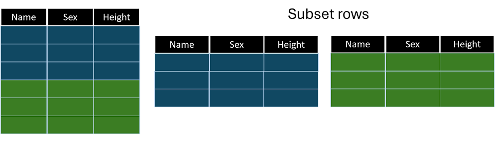

*Copyright @ www.mycsg.in;
What is the word meaning of subset
A part of a larger group of related things.
Subset observations from a dataset
Subset observations from a dataset

Where do we need to subset data
Subset the records of cars manufactured in a particular continent
Select only the male student records from the class dataset
Identify and list the subjects of a clinical trial whose age is greater than 60
Create sample input datasets
data class; set sashelp.class; run; data cars; set sashelp.cars; run;
Copy Code
View Log
SAS Log
data class; set sashelp.class; run; NOTE: There were 19 observations read from the data set SASHELP.CLASS. NOTE: The data set WORK.CLASS has 19 observations and 5 variables. NOTE: DATA statement used (Total process time): real time 0.10 seconds cpu time 0.00 seconds data cars; set sashelp.cars; run; NOTE: There were 428 observations read from the data set SASHELP.CARS. NOTE: The data set WORK.CARS has 428 observations and 15 variables. NOTE: DATA statement used (Total process time): real time 0.06 seconds cpu time 0.00 seconds
`class` and `cars` will be used in the subsetting examples below
Inspect the input datasets first, so you can clearly see which rows are retained by each subsetting technique
View Data
Dataset View
Subset records using the WHERE statement
The `where` statement filters observations based on a condition
Only observations that meet the condition are read from the input dataset into the DATA step processing stream
This can be more efficient than reading all observations and discarding some later
Create a dataset named males by subsetting the male student records from class dataset
Notice in the log the number of observations read and written
Only observations with `sex="M"` are selected
data males; set class; where sex="M"; run;
Copy Code
View Log
SAS Log
data males; set class; where sex="M"; run; NOTE: There were 10 observations read from the data set WORK.CLASS. WHERE sex='M'; NOTE: The data set WORK.MALES has 10 observations and 5 variables. NOTE: DATA statement used (Total process time): real time 0.01 seconds cpu time 0.00 seconds
Inspect `males` and confirm that all retained observations are male students
View Data
Dataset View
Create a dataset named females_preteen by subsetting female student records whose age is less than 13
Here, the filter depends on two variables, `sex` and `age`
The conditions are combined with `and` because both must be true
data females_preteen; set class; where sex="F" and age lt 13; run;
Copy Code
View Log
SAS Log
data females_preteen; set class; where sex="F" and age lt 13; run; NOTE: There were 3 observations read from the data set WORK.CLASS. WHERE (sex='F') and (age<13); NOTE: The data set WORK.FEMALES_PRETEEN has 3 observations and 5 variables. NOTE: DATA statement used (Total process time): real time 0.12 seconds cpu time 0.00 seconds
Verify that every retained observation is female and younger than 13
View Data
Dataset View
Create a dataset named cars_mileage by subsetting cars with mpg_city greater than 24 or mpg_highway greater than 30
This example combines two conditions with `or` because a row is retained when at least one condition is true
Such compound conditions are common in real filtering tasks
data cars_mileage; set cars; where mpg_city gt 24 or mpg_highway gt 30; run;
Copy Code
View Log
SAS Log
data cars_mileage; set cars; where mpg_city gt 24 or mpg_highway gt 30; run; NOTE: There were 83 observations read from the data set WORK.CARS. WHERE (mpg_city>24) or (mpg_highway>30); NOTE: The data set WORK.CARS_MILEAGE has 83 observations and 15 variables. NOTE: DATA statement used (Total process time): real time 0.01 seconds cpu time 0.01 seconds
Inspect the retained rows and confirm that each car satisfies at least one of the two mileage conditions
View Data
Dataset View
Subset records using a subsetting IF statement
When a subsetting IF statement is used, SAS first reads the observation into the PDV and then evaluates the condition
If the expression evaluates to false, SAS returns to the top of the DATA step without writing the observation
This is a flexible approach because the IF condition can use variables created earlier in the same DATA step
Create a dataset named females by subsetting female records using a subsetting IF statement
data females; set class; if sex="F"; run;
Copy Code
View Log
SAS Log
data females; set class; if sex="F"; run; NOTE: There were 19 observations read from the data set WORK.CLASS. NOTE: The data set WORK.FEMALES has 9 observations and 5 variables. NOTE: DATA statement used (Total process time): real time 0.04 seconds cpu time 0.01 seconds
Compare `females` with the earlier WHERE example, and note that the final selected rows can be the same even though processing differs internally
View Data
Dataset View
Create a dataset named select_sedans by subsetting Sedan cars with highway mileage greater than 35 using subsetting IF
data select_sedans; set cars; if type="Sedan" and mpg_highway gt 35; run;
Copy Code
View Log
SAS Log
data select_sedans; set cars; if type="Sedan" and mpg_highway gt 35; run; NOTE: There were 428 observations read from the data set WORK.CARS. NOTE: The data set WORK.SELECT_SEDANS has 19 observations and 15 variables. NOTE: DATA statement used (Total process time): real time 0.00 seconds cpu time 0.00 seconds
View Data
Dataset View
Create a dataset named cheap_mileage by subsetting cars with msrp less than 15000 or city mileage greater than 40 using subsetting IF
data cheap_mileage; set cars; if msrp lt 15000 or mpg_city gt 40; run;
Copy Code
View Log
SAS Log
data cheap_mileage; set cars; if msrp lt 15000 or mpg_city gt 40; run; NOTE: There were 428 observations read from the data set WORK.CARS. NOTE: The data set WORK.CHEAP_MILEAGE has 40 observations and 15 variables. NOTE: DATA statement used (Total process time): real time 0.01 seconds cpu time 0.00 seconds
View Data
Dataset View
Subset records using IF THEN OUTPUT
The `output` statement tells SAS to write the current contents of the PDV to the output dataset
With `if condition then output;`, we explicitly write only rows that satisfy the condition
This pattern is useful when one DATA step may write different observations to different output datasets
Create a dataset named tall by subsetting students with height greater than 60 using IF THEN OUTPUT
data tall; set class; if height gt 60 then output; run;
Copy Code
View Log
SAS Log
data tall; set class; if height gt 60 then output; run; NOTE: There were 19 observations read from the data set WORK.CLASS. NOTE: The data set WORK.TALL has 12 observations and 5 variables. NOTE: DATA statement used (Total process time): real time 0.00 seconds cpu time 0.00 seconds
Inspect `tall` and confirm that every student has height greater than 60
View Data
Dataset View
Subset records using IF THEN DELETE
The `delete` statement tells SAS to discard the current observation and return to the top of the DATA step
With `if condition then delete;`, we remove unwanted rows instead of explicitly writing wanted rows
This is especially convenient when it is easier to describe which observations should be excluded
Create a dataset named short by subsetting students with height less than 60 using IF THEN DELETE
Because we want the short students, we delete observations whose height is greater than or equal to 60
data short; set class; if height ge 60 then delete; run;
Copy Code
View Log
SAS Log
data short; set class; if height ge 60 then delete; run; NOTE: There were 19 observations read from the data set WORK.CLASS. NOTE: The data set WORK.SHORT has 7 observations and 5 variables. NOTE: DATA statement used (Total process time): real time 0.00 seconds cpu time 0.00 seconds
Review `short` and confirm that only students with height less than 60 remain
View Data
Dataset View
Key points to remember
`where` filters observations before they are processed in the DATA step
A subsetting `if` filters after the observation has been read into the PDV
`if then output` explicitly writes selected observations
`if then delete` explicitly discards selected observations
Different subsetting styles can produce the same final result, but differ in processing behavior and flexibility